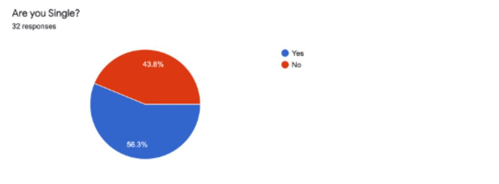
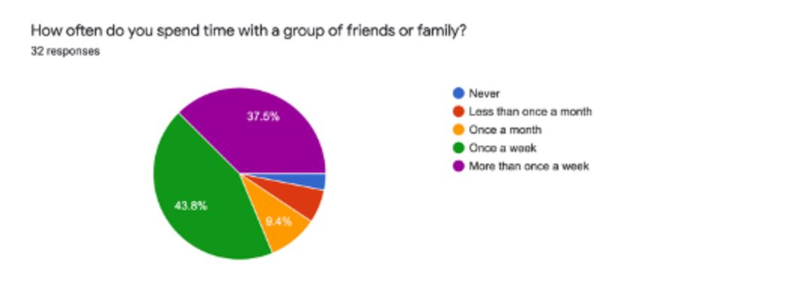
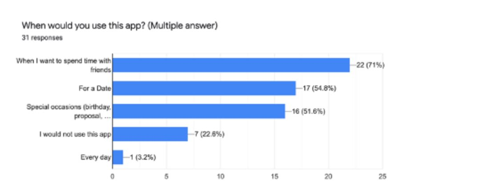
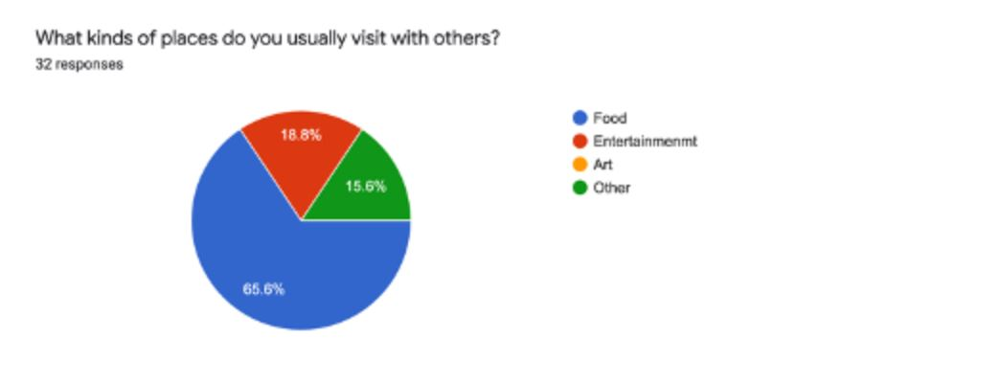
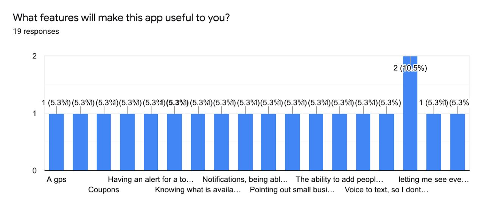
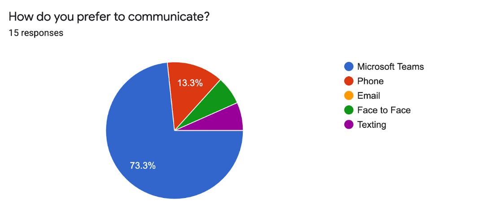
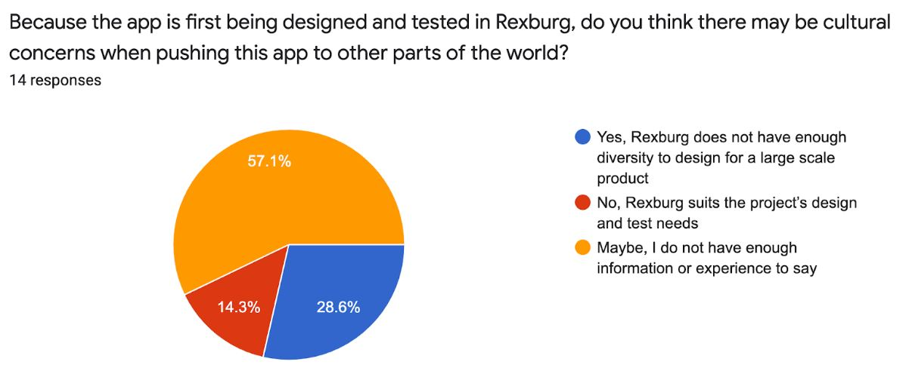

Our team’s elicitation technique for this week was the bottom up approach. This technique gathers information from different levels of the project and company from the end users to management. We knew that different groups would be able to provide different types of information but we needed an effective way to gather the information from each group. In order to put our plan into motion, we used two separate questionnaires. We had already gathered some data via survey last week on the companies we could potentially use. So, this time, we decided to instead focus on customers and “the company”. The company, in the context of this class, being the class as a whole. We obtained many responses on both questionnaires.
As our team gathered data from the bottom up approach, we found that you can use the direct approach or the indirect approach. As we talked about our ideas we found that although the direct approach has its benefits, we would use the indirect approach. The reason we found that the indirect approach would be best for our needs was it would allow us to gather data from more people. Our decision to do the indirect approach was mainly chosen due to Covid-19. [1,pg 2] A questionnaire would allow for the gathering of information while still keeping social distancing. It would also allow respondents to give information without further disrupting their schedules.
The bottom up approach starts by getting the data from the customer and then moving up through the company or in our case our class. The best part of using the bottom up approach is being able to take the needs and perspective from the customer first. When using the bottom up approach it is useful to focus on the needs individually and not to worry about how to implement the needs until later. So the bottom up approach makes it possible to focus on the need and then worry about how it can be implemented into the project later. The bottom up approach gives a good look at the features that the project can incorporate.[2]
The bottom up approach also has many down sides. When starting with the needs of the customer the implementation of how everything comes together is not taken into account until later. Not having an organizational structure can cause structural changes to be made later in the project. [2]
The main purpose for the Bottom Up technique is to gather information from the customer (individuals) and the company (our class), then analyze the data for possibilities on how the design should proceed. This contributes feedback starting with the customers and ending with the CEO of the company. This allows better design because the company can compare the customer wants and habits with possible programming, interaction and tool designs.
We identified potential customers as anyone able to use the application. Our main targets however, were people from ages of 16 - 30. We believed this age range would be the demographic to use this app the most. It generally consists of single individuals who are highly interested in gathering with others.
Stakeholders were identified as anyone with a stake in the project. PM, Leads, Specialists, IC’s. All members within our class are considered stakeholders due to the time and energy used towards this product.
We collected information from individuals about what different individuals would like in an app like this. We asked for information on how and why they might use this and some demographic information.
We will be using Bottom-up approach and for the successful implementation of the plan we will be strictly following the steps described below.
Team identified, researched and better comprehended the assigned technique and what its implementation process entails. A plan was drafted on how Team 2 should best implement and report the technique. Afterwards, questions were created for each of the questionnaires, one for the customer and the other for the company.
Team 2 posted the Bottom Up implementation plan. After receiving feedback from other teams, corrections and other revisions were made. The final set of questions for both questionnaires were drafted and put into Google Forms.
Team 2 sent the forms to both the company and the customers. Interviews were also conducted with the recorded information later put into Google Forms. Interviews were done aside from the questionnaires due to come customers being unavailable or not not interested in filling out a questionnaire themselves.
Team 2 gathered over a video conference call to analyze the data in Google Sheets. After viewing the results, Team two agreed this elicitation report was effective and beneficial. Report was drafted, edited, formatted and lastly converted to HTML where it was submitted to Github.
A summary of the data we got back from the questionnaires indicates that a lot of the customers will be interested in the app and may recommend it to their friends. A great percentage of the customers will only use this app when they want to go out with friends. Data from the companies also indicated that the app is intended to target teenagers (both male and female) to people who are in their late 20s. A detailed analysis of this data is provided later in this document.
Most of the potential users are between the ages of 22 and 30, so the app needs to be designed to appeal to this age group.
Almost half of the individuals surveyed are married, but the sponsor said this focus of the app would be on single adults. Because of this, perhaps the results should be read with that in mind.
Almost everybody goes out with groups and so this app has the potential to help these people organize their gatherings.
Almost ¾ of the survey participants said they would use it for spending time with friends, but only half were for any other purpose. This perhaps could be of great use in marketing the app.
The most common thing people do when they go out is to eat. This would also be indicative of how the product should be marketed unless the intent is to encourage another purpose for going out with friends.
There are a lot of features that people suggested as possible useful features for the app.
The majority of companies agreed that we were targeting individuals who are teenagers to late twenties with our app.
Microsoft Teams is the best way for communication between the different teams.
There are many who are concerned with the small scale testing environment for the app that it does not represent the majority of users accurately and so, it may not represent how successful the app will be on a larger scale.
As we analyzed the data we have found that a few features needed to be added: